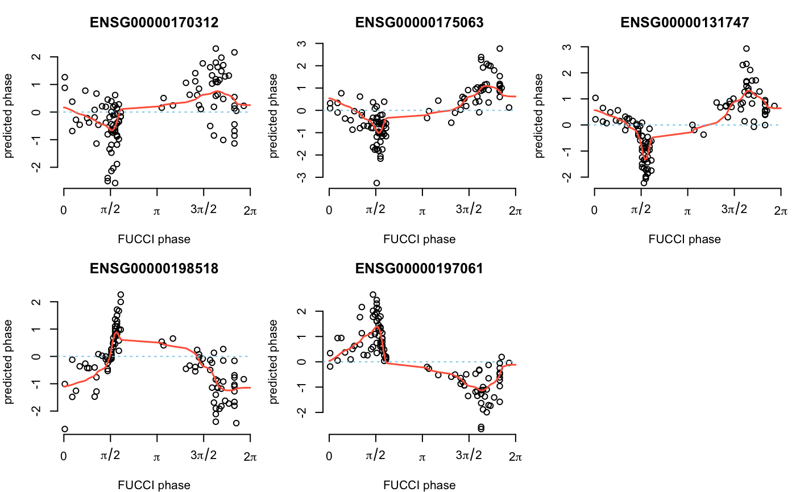

R/cycle_npreg.R
cycle_npreg_outsample.RdApply the estimates of cycle_npreg_insample to another gene expression dataset to infer an angle or cell cycle phase for each cell.
cycle_npreg_outsample( Y_test, sigma_est, funs_est, method.trend = c("trendfilter", "loess", "bspline"), normed = TRUE, polyorder = 2, method.grid = "uniform", ncores = 2, grids = 100, get_trend_estimates = FALSE )
| Y_test | A SingleCellExperiment object. |
|---|---|
| sigma_est | Input from training data. A vector of gene-specific standard error of the cyclic trends. |
| funs_est | Input fron training data. A vector of cyclic functions estimating cyclic trends. |
| method.trend | Varous methods that can be applied to estimate cyclic trend of gene expression levels. |
| normed | Is the data already normalized? TRUE or FALSE. |
| polyorder | We estimate cyclic trends of gene expression levels using nonparamtric trend filtering. The default fits second degree polynomials. |
| method.grid | Method for defining bins along the circle. |
| ncores | We use doParallel package for parallel computing. |
| grids | number of bins to be selected along 0 to 2pi. |
| get_trend_estimates | To re-estimate the cylic trend based on the predicted cell cycle phase or not (T or F). Default FALSE. This step calls trendfilter and is computationally intensive. |
A list with the following elements:
The input gene expression marix.
Inferred angles or cell cycle phases, NOT ordered.
Log-likelihood estimates for each gene.
The inferred angles reordered (in ascending order).
The input gene expression matrix reordered by cell_times_reordered.
Estimated standard error of the cyclic trend for each gene, reordered by cell_times_reordered.
A list of functions for approximating the cyclic trends of gene express levels for each gene, reordered by cell_times_reordered.
Estimated cyclic trend of gene expression values for each gene, reordered by cell_times_reordered.
Probabilities of each cell belong to each bin.
cycle_npreg_insample for obtaining parameteres for
cyclic functions from training data,
cycle_npreg_loglik for log-likehood at
angles between 0 to 2pi,
initialize_grids for selecting
angles in cycle_npreg_loglik,
cycle_npreg_mstep for estimating cyclic functions given
inferred phases from cycle_npreg_loglik
Other peco classifier functions:
cycle_npreg_insample(),
cycle_npreg_mstep()
library(SingleCellExperiment)#>#>#>#>#>#> #>#> #> #> #> #>#> #> #>#> #> #> #> #> #> #> #>#>#> Warning: package ‘S4Vectors’ was built under R version 3.6.3#> #>#> #> #>#>#>#> Warning: package ‘GenomeInfoDb’ was built under R version 3.6.3#>#> #> #> #> #>#>#> Warning: package ‘DelayedArray’ was built under R version 3.6.3#>#> #>#> #> #>#>#> #>#> #> #>#> #> #>data(sce_top101genes) # select top 5 cyclic genes sce_top5 <- sce_top101genes[order(rowData(sce_top101genes)$pve_fucci, decreasing=TRUE)[1:5],] # Select samples from NA18511 for our prediction example coldata <- colData(sce_top5) which_samples_train <- rownames(coldata)[coldata$chip_id != "NA18511"] which_samples_predict <- rownames(coldata)[coldata$chip_id == "NA18511"] # learning cyclic functions of the genes using our training data sce_top5 <- data_transform_quantile(sce_top5)#>expr_quant <- assay(sce_top5, "cpm_quantNormed") Y_train <- expr_quant[, colnames(expr_quant) %in% which_samples_train] theta_train <- coldata$theta_shifted[rownames(coldata) %in% which_samples_train] names(theta_train) <- rownames(coldata)[rownames(coldata) %in% which_samples_train] # obtain cyclic function estimates model_5genes_train <- cycle_npreg_insample(Y = Y_train, theta = theta_train, polyorder=2, ncores=2, method.trend="trendfilter")#># predict cell cycle model_5genes_predict <- cycle_npreg_outsample( Y_test=sce_top5[,colnames(sce_top5) %in% which_samples_predict], sigma_est=model_5genes_train$sigma_est, funs_est=model_5genes_train$funs_est, method.trend="trendfilter", ncores=2, get_trend_estimates=FALSE) # estimate cyclic gene expression levels given cell cycle for each gene predict_cyclic <- fit_cyclical_many(Y=assay(model_5genes_predict$Y,"cpm_quantNormed"), theta=colData(model_5genes_predict$Y)$cellcycle_peco)#>#> [1] TRUEpar(mfrow=c(2,3), mar=c(4,4,3,1)) for (g in seq_along(rownames(model_5genes_predict$Y))) { plot(assay(model_5genes_predict$Y,"cpm_quantNormed")[ rownames(model_5genes_predict$Y)[g],], x=colData(model_5genes_predict$Y)$cellcycle_peco, axes=FALSE, xlab="FUCCI phase", ylab="Predicted phase") points(y=predict_cyclic$cellcycle_function[[ rownames(model_5genes_predict$Y)[g]]]( seq(0, 2*pi, length.out = 100)), x=seq(0, 2*pi, length.out = 100), pch=16, col="royalblue") axis(2); axis(1,at=c(0,pi/2, pi, 3*pi/2, 2*pi), labels=c(0,expression(pi/2), expression(pi), expression(3*pi/2), expression(2*pi))) abline(h=0, lty=1, col="black", lwd=.7) title(rownames(model_5genes_predict$Y_reordered)[g]) } title("Predicting cell cycle phase for NA18511", outer=TRUE)